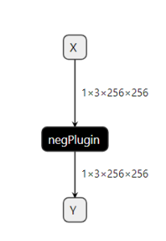
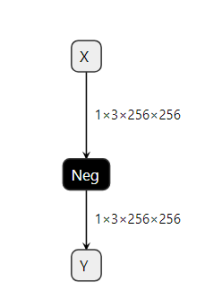

Safety neg plugin performance test
Intro：
 
Neg takes one input data (Tensor) and produces one output data (Tensor) where each element flipped sign, y = -x, is applied to the tensor elementwise.
Support Float, HALF, INT
CommandLine:
./safe_plugin_build --onnx=neg_safe.onnx --saveEngine=safety_neg_plugin.gie
./safe_plugin_infer --bmp=input.bmp --loadEngine=safety_neg_plugin.gie
./trtexec --onnx=neg_std.onnx --loadInputs=X:input.tensor --exportOutput=trtexec_output.json --dumpProfile
python3 compare_tensor.py --safety_tensor output.tensor --standard_tensor trtexec_output.json --precision 0.00001
# ./safe_plugin_infer --bmp=input.bmp --loadEngine=safety_neg_plugin.gie&&&& RUNNING TensorRT.sample_safe_plugin_infer [TensorRT v8610] # ./safe_plugin_infer --bmp=input.bmp --loadEngine=safety_neg_plugin.gieinput tensor size = {1x3x256x256x}iterators: 4824, total time: 34.3611 msec, Time= 0.007 mseccudacudacudacuda errorID: 0, no error, fun doInference, line 444&&&& PASSED TensorRT.sample_safe_plugin_infer [TensorRT v8610] # ./safe_plugin_infer --bmp=input.bmp --loadEngine=safety_neg_plugin.gieStandard Neg performance:
[01/02/1970-06:13:36] [I] === Profile (42384 iterations ) ===[01/02/1970-06:13:36] [I] Layer Time (ms) Avg. Time (ms) Median Time (ms) Time %[01/02/1970-06:13:36] [I] PWN(node_of_Y) 326.63 0.0077 0.0076 100.0[01/02/1970-06:13:36] [I] Total 326.63 0.0077 0.0076 100.0[01/02/1970-06:13:36] [I]&&&& PASSED TensorRT.trtexec [TensorRT v8610] # ./trtexec --onnx=neg_std.onnx --loadInputs=X:input.tensor --exportOutput=trtexec_output.json --dumpProfile compare precision:
python3 compare_tensor.py --safety_tensor output.tensor --standard_tensor trtexec_output.json --precision 0.00001
arrarysize=196608
+--------------------+---------+
| Compare Status | Success |
+--------------------+---------+
| Total diff num | 0 |
| > 10E-1 percentage | 0.000 % |
| > 10E-2 percentage | 0.000 % |
| > 10E-3 percentage | 0.000 % |
| > 10E-4 percentage | 0.000 % |
| > 10E-5 percentage | 0.000 % |
| > 10E-6 percentage | 0.000 % |
+--------------------+---------+
value compare
-2.24891 -2.2489083
-2.24891 -2.2489083
-2.24891 -2.2489083
-2.24891 -2.2489083
-2.24891 -2.2489083
-2.24891 -2.2489083
-2.24891 -2.2489083
-2.24891 -2.2489083
-2.24891 -2.2489083